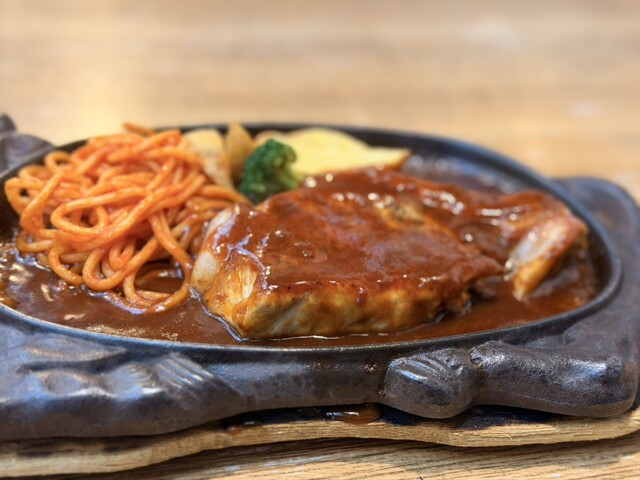
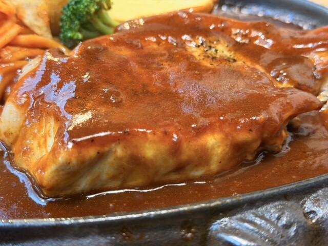
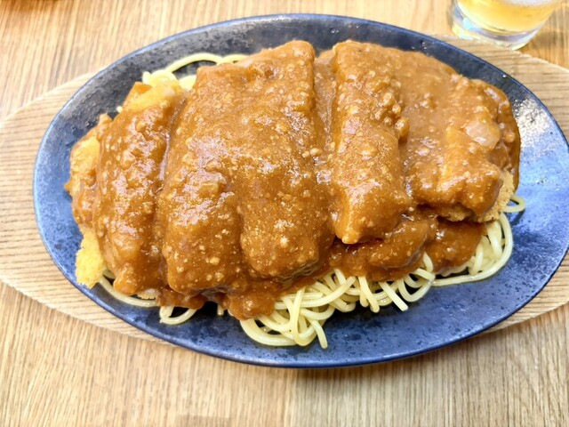
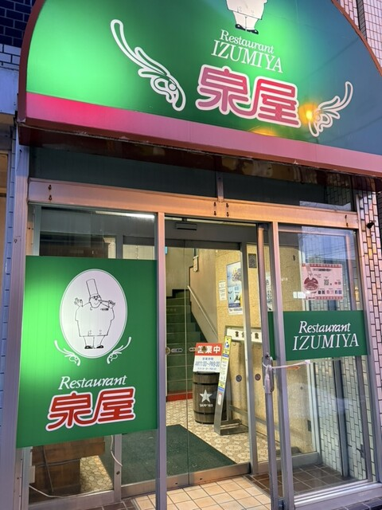

レストラン泉屋 総本店とは
茜色の夕日で知られる釧路の地で昭和34年（1959年）に創業したレストラン泉屋 総本店。カウンター5席・テーブル2卓の小さな洋食屋からスタートし、冷涼な釧路の気候に合わせて熱々の鉄皿でスパゲティを提供したことが、のちに釧路のソウルフードとなる「スパカツ」の原点です。昭和35年に考案されたスパカツ（ミートソーススパゲティ＋トンカツのせ）は今や文化庁「100年フード」に認定され、パスタ消費量日本一の証として日清製粉から贈られた「ママースパゲティ」の看板が今も店内に掲げられています。
数日かけて炊き上げる北海道産豚牛挽肉のミートソースは、玉ねぎの甘みとデミソースのコクが融合した唯一無二の味わい。幣舞橋のほど近く、末広町のビルに構える本店は、平日は地元の常連客、週末は全国から訪れる観光客で賑わいます。
実食レビュー
運ばれてきた瞬間、鉄皿がジュージューと音を立て、湯気とミートソースの芳しい香りが漂う——それだけで食欲が一気に高まります。太麺のスパゲティはデュラムセモリナ粉100%の最高級品。その上に鎮座するサクサクのトンカツと、数日かけて炊き上げた濃厚ミートソースの組み合わせは、食べても食べても飽きない中毒性があります。鉄皿の保温効果で最後の一口まで熱々のまま食べられるのも、釧路の寒い気候を知り尽くした創業者の知恵。大盛り・特大盛りにも対応しており、ガッツリ食べたい方には迷わず大盛りをおすすめします。
スパカツ以外にも昭和34年創業時に考案された「泉屋風」（ざく切り野菜＋ハム＋卵の塩味スパゲティ）や、いけだ牛ステーキ、厚岸産カキフライなど道東の食材を活かしたメニューが充実。グループで訪れてシェアするのがおすすめです。
おすすめメニュー
- スパカツ（ミートカツ） ¥1,320 — 看板メニュー。ミートソース＋トンカツ。大盛り・特大盛りも対応
- 泉屋風 ¥1,100 — 創業時考案の塩味パスタ。ざく切り野菜・ハム・卵が絡む
- ピリ辛泉屋風 ¥1,200 — 鷹の爪・ニンニクチップ入りのアレンジ版
- 昔ながらのナポリタン ¥1,100 — ハム・チーズ入りの懐かしい王道ナポリタン
- ピカタ ¥1,200 — 薄たまご焼きのせ・チャーシュー入りのオリジナル
- あさりスパゲティ ¥1,250 — 醤油味・トマト入り。道東の旨みを堪能
- ミート＆ハンバーグ ¥1,450 — スパカツにハンバーグが加わる贅沢な一皿
- 海の幸スパゲティ ¥1,380 — 道東産海鮮をふんだんに使った人気メニュー
📎 公式Webサイト
レストラン泉屋 総本店 公式サイトアクセス・予約
訪問のコツ
- 週末・連休は1時間以上の行列も——入口2階の受付台帳に名前を記入してから並ぶこと
- 平日ランチ（開店直後の11時台）が比較的空いておりおすすめ
- 鉄皿は非常に熱いので手や膝に触れないよう注意。エプロンの貸し出しあり
- 定休日は月1回の火曜日だが曜日は月によって変わるため、訪問前に公式サイトかSNSで要確認
- 駐車場は店舗に直接なし——近隣の有料駐車場を利用。MOO・フィッシャーマンズワーフから徒歩5分圏内
- 粉チーズ・タバスコは卓上に用意あり。好みでアレンジを楽しんで